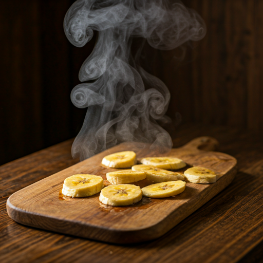
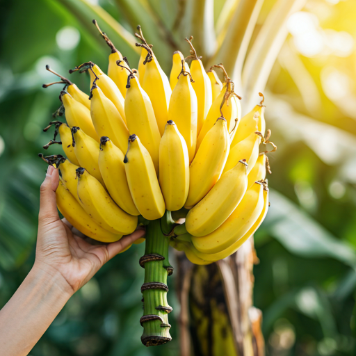
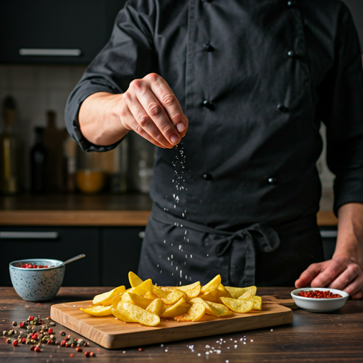
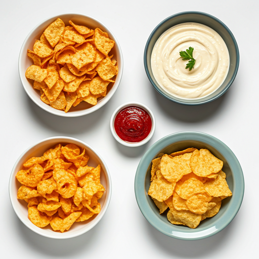

It started beneath the shade of a century-old grove. We observed a simple truth: the most profound flavors don’t come from a lab, but from the earth's own patient rhythm.
Snacko was born out of a desire to bridge the gap between "convenient" and "culinary." We took the humble plantain, the earthy potato, and the sun-kissed banana, applying gourmet techniques to create what we call the Gourmet Snack Revolution.
Every bag of Snacko is a testament to our journey from a small coastal kitchen to the global stage—maintaining our integrity, our crunch, and our soul.
We strip away the artificial, leaving only the vibrant, raw power of nature's best ingredients, elevated by master spice blending.
We envision a world where every bite contributes to a healthier body and a more sustainable planet, without ever compromising on the thrill of flavor.

We partner exclusively with family-owned groves that practice regenerative agriculture.

We carefully slice and prepare each batch using time-honored culinary techniques.

Our master tasters verify every batch for the perfect balance of heat, salt, and sweetness.
"Snacko isn't just a food company; it's an invitation to pause, taste, and celebrate the artistry hidden in the everyday. We don't just make chips; we make memories of flavor".